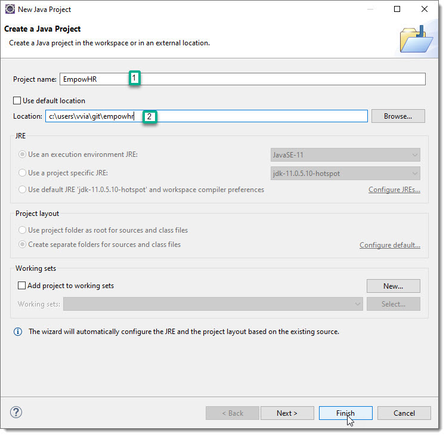
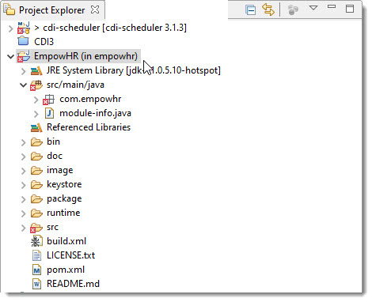
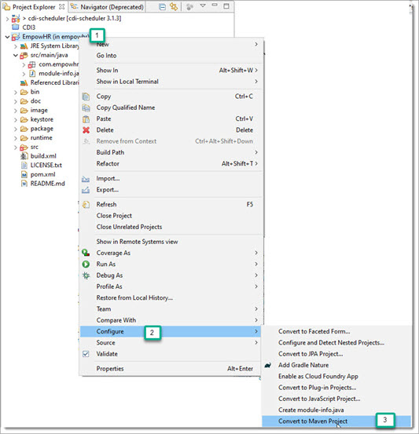
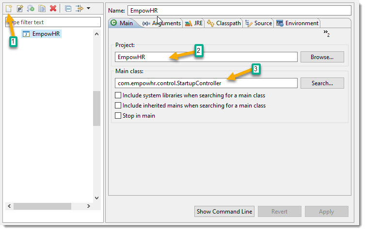
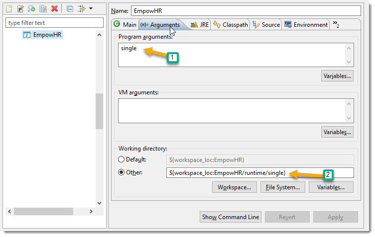
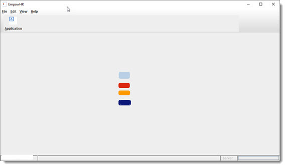
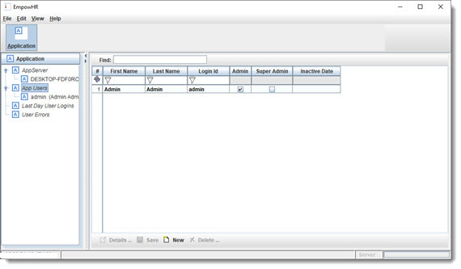
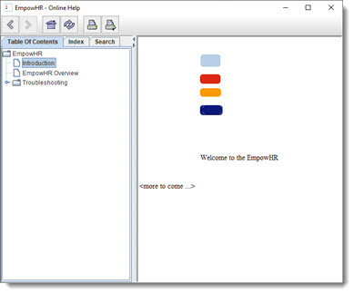
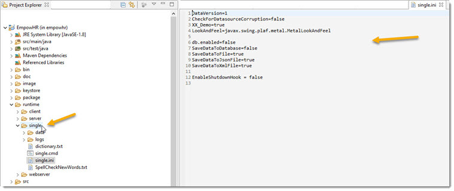

Create a new project in your Java IDE. Here, I am using Eclipse:

Make sure to change Location to the directory that you entered for the Models code generator directory above.
Your project will look like this in the Eclipse project explorer.

Set up the project to use Maven for building. Do this by right clicking on the project name, as follows ...

We are now ready to run. We have the option to run as a single user, and as a multi-user (client, client UI, server, web server, and more).
The runtime directory in the project has subdirectories for each runtype to use as the "working directory".
Running as a single user, do the following from Eclipse to set up to run as Single User mode:
From Eclipse main menu, choose "Run/Run Configurations" and choose
option to create a new launch configuration
Enter the following:


This is now ready to run.
Running the new App looks like this.

Click on toolbar button “Application”.

Click on menu item “Help”.

This is the starting point, that will expand as we add and change the model.
Quick note: this same application can be run as multiuser and split into multiple services at any time. For now, we will use the single-user runtime option.
The runtime directory looks like this.

Runtime directory:
The file single.ini is used for runtime config settings for single-user runtime mode. It has default settings for saving the data to file and loads it into an in-memory database at startup. We will switch over to a database later. For now, the in-memory DB does everything you need for queries and saving. The default config settings can be found in the source code, located in directory com/empowhr/resource, see files values.properties and Resource.java for the full listing and more info.
<